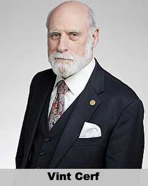
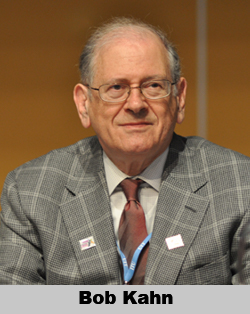
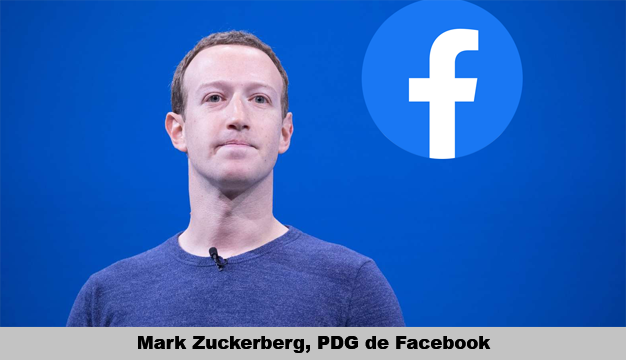

Le documentaire traite chronologiquement de l’évolution d’Internet, de sa technologie et de ses coutumes à travers le demi-siècle dernier.
Le documentaire débute en 1969. À l’époque, les ordinateurs étaient gros et chers, seules les grosses sociétés, les universités ou l’armée pouvaient se les offrir et les utilisateurs voulant employer plusieurs logiciels tournants sur des ordinateurs différents devaient faire le chemin d’un ordinateur à un autre. La communication entre les machines n’était malheureusement pas aussi efficace qu’aujourd’hui. En effet, comme les premiers systèmes d’exploitation mono-tâche, les communications de l’époque ne permettaient l’envoi que d’un seul message à la fois, et ce n’était qu’à la réception du message entier que le prochain pouvait partir. L’inconvénient de cette méthode était que lorsqu’un message était particulièrement volumineux, tous les messages suivants, même les plus petits, devaient attendre avant de pouvoir partir. Ce qui ralentissait considérablement le réseau.
Leonard Kleinrock et son équipe se penchèrent donc sur un design permettant l’accélération de la communication entre machine appelé "La commutation de paquet".
Ce système scindait tous les messages sans exception en plusieurs "paquets" de même taille permettant d’utiliser au maximum l’espace promulgué par les canaux de communication. Les paquets pouvaient donc circuler séparément et étaient reconstitués à la fin de leur parcours dans le message initial. Les paquets des messages plus petits pouvaient donc s’immiscer entre les paquets des messages plus gros. Ce principe est encore, à l’heure d’aujourd’hui, à la base de la communication entre nos machines.

Cependant, dans les années 70, il n’y avait pas un seul internet unifié comme aujourd’hui. Il y avait plutôt plusieurs réseaux propres, qui ne communiquaient pas de manière efficace entre eux, car chacun avait son propre format. Il devenait nécessaire de créer un format commun permettant d’unifier l’ensemble de ces réseaux en un seul, le besoin d’atteindre les données et les informations grandissant avec le temps. Ce furent Vint Cerf et Bob Kahn qui s’y attelèrent et créèrent le protocole TCP/IP. Il s’agit d’un modèle d’encapsulation de données en plusieurs couches, permettant de mettre une "étiquette" autour d’un paquet de données.
Dans les années 80, les ordinateurs rapetissaient rapidement, jusqu’à la création d’ordinateurs personnels, devenant plus accessibles financièrement avec le temps ; les particuliers pouvaient dès lors se permettre d’en acheter un. Internet évolua également dans ce sens mais "Accessible sur le plan financier" ne voulait pas dire accessible sur le plan de l’installation. À l’époque, il était fastidieux de réussir à se brancher sur le net avec son ordinateur et tout cela pour n’avoir qu’une connexion lente. En effet, à l’époque, les communications ne se faisaient qu’à une vitesse de 56 kilobits par seconde. La vitesse a néanmoins commencé à évoluer grâce à des fibres coaxiales hybrides.

 Un service d’accès s’est alors démocratisé grâce à une campagne marketing agressive du fournisseur AOL, America Online Incorporated. En effet, AOL envoyait gratuitement par la poste des disques d’installation d’un programme donnant accès à Internet, campagne tellement agressive qu’à un moment, dans les années 90, la moitié des disques créés sur terre provenaient d’AOL. Ce sont eux qui ont démocratisé les forums ou les services de messageries instantanées.
Un service d’accès s’est alors démocratisé grâce à une campagne marketing agressive du fournisseur AOL, America Online Incorporated. En effet, AOL envoyait gratuitement par la poste des disques d’installation d’un programme donnant accès à Internet, campagne tellement agressive qu’à un moment, dans les années 90, la moitié des disques créés sur terre provenaient d’AOL. Ce sont eux qui ont démocratisé les forums ou les services de messageries instantanées.
Le documentaire fait alors un bond dans le temps. Nous nous retrouvons en 2014, et les utilisateurs d’Internet comptent plus de trois milliards d’internautes. En effet, Internet s’est énormément démocratisé depuis les années 90 et les particuliers se le sont grandement approprié. En bien comme en mal.
 Pour nuancer son propos, le documentaire montre que, grâce à un défi lancé sur le web, l’association combattant la sclérose latérale amyotrophique a récolté plus de 115 millions de dollars en 6 semaines. La campagne virale visait à éradiquer la maladie de Lou Gehrig. Cependant, Le documentaire nuance une nouvelle fois son propos en mettant en avant l’idée que ce défi, l’Ice-bucket challenge, visant à se verser un seau d’eau glacée sur la tête, faire un don à l’association, et défier la personne suivante, aurait propulsé la culture narcissique du web.
Pour nuancer son propos, le documentaire montre que, grâce à un défi lancé sur le web, l’association combattant la sclérose latérale amyotrophique a récolté plus de 115 millions de dollars en 6 semaines. La campagne virale visait à éradiquer la maladie de Lou Gehrig. Cependant, Le documentaire nuance une nouvelle fois son propos en mettant en avant l’idée que ce défi, l’Ice-bucket challenge, visant à se verser un seau d’eau glacée sur la tête, faire un don à l’association, et défier la personne suivante, aurait propulsé la culture narcissique du web.

On parle alors de Facebook qui aurait révolutionné nos moyens de communication à tel point qu’on se souviendrait difficilement de la manière dont on discutait auparavant. Le 4 février 2004, Mark Zuckerberg lança le site Facebook à l’échelle nationale. 10 ans plus tard, près de 2 milliards de personnes ouvrent une session Facebook tous les mois. Le documentaire met alors l’accent sur le fait qu’étant donné que nous étions passé du simple échange de mail à une façon plus simple et direct de diffuser ce qui se passait dans notre vie, nous étions dès lors capable de tout voir. Depuis de sympathiques moments échangés en ligne jusqu’à des éléments plus sombres comme l’exécution de Philando Castile, un jeune Afro-Américain, assassiné par un policier alors qu’il tentait de récupérer les papiers que le policier lui avait demandé et tout ça posté et mis en ligne sur Facebook Live. Le documentaire met alors en avant le fait que chaque image que l’on poste sur Internet y restera à vie et qu’il faut apprendre à nos enfants la conséquence d’un geste aussi banal que d’uploader une photo.
D’autre part, Internet, via la diffusion en live des jeux, a permis à beaucoup de gens de vivre de leur passion. En effet, le streaming de jeux-vidéos est une industrie mondiale qui engrangeait 100 milliards de dollars de 2014. Certains influenceurs se font payer par système de dons pour faire le show et jouer à un jeu, compétitivement ou non. Des gens les observent jouer comme s’ils regardaient un match de foot, la seule différence est que ces gens sont anonymes.
Le documentaire présente alors l’anonymat, comme étant un élément exacerbant les mauvais côtés de la nature humaine. Ils prennent l’exemple de "Yik Yak", une application créée par deux étudiants qui voulaient mettre en avant des personnes en n'ayant pas besoin d’avoir un grand nombre de followers, et ce, avec un élément simple : les commentaires étaient complètement anonymes. Ce qui a permis à certains utilisateurs de rapidement faire évoluer les commentaires dans une direction offensante, sexiste ou raciste. Les réseaux sociaux et les sites qui les font tourner, réunissant plus de monde que jamais, ont dû évoluer pour traiter ces problèmes. En effet, les sites paient désormais des travailleurs de l’ombre, les modérateurs de contenu, pour surveiller et éliminer les propos offensants de ces réseaux.
Le documentaire présente, ensuite, une forme plus directe de contrôle du web. En effet, la Chine est connue pour contrôler directement ce qui est présent sur son territoire en termes de site web. Beaucoup de sites n’allant pas dans le sens du gouvernement sont introuvables. La Chine a donc mis en place un système très controversé lui permettant de surveiller et ficher sa population via divers moyens.
 Elle aurait également fait pression sur le site de recherches en ligne "Yahoo!" pour fournir des informations sur ses abonnés, provoquant ainsi l’arrestation de certains journalistes sur son territoire. Le point de vue du documentaire présente que certains pays ont effectivement des objectifs valables dans le contrôle du web, comme l’interdiction de propagande Nazi, mais il se demande alors jusqu’où il est possible d’aller sans empiéter sur le droit à la vie privée. En effet, aux Etats Unis, par exemple, un ancien membre de la NSA, Edward Snowden, a mis en exergue que la CIA collectait secrètement des données sur la population américaine.
Elle aurait également fait pression sur le site de recherches en ligne "Yahoo!" pour fournir des informations sur ses abonnés, provoquant ainsi l’arrestation de certains journalistes sur son territoire. Le point de vue du documentaire présente que certains pays ont effectivement des objectifs valables dans le contrôle du web, comme l’interdiction de propagande Nazi, mais il se demande alors jusqu’où il est possible d’aller sans empiéter sur le droit à la vie privée. En effet, aux Etats Unis, par exemple, un ancien membre de la NSA, Edward Snowden, a mis en exergue que la CIA collectait secrètement des données sur la population américaine.
Le documentaire montre ensuite une personne se faisant « Swatter ». Le swatting est un canular téléphonique où de mauvais utilisateurs peuvent suivre un streamer, sur des plateformes comme twitch. Ils appellent alors la police et leur font croire qu’une personne aurait commis des atrocités dignes d’une intervention très musclée, notamment, des forces spéciales du « Special Weapons And Tactics », ou « S.W.A.T ». Ceux-ci, devant prendre cet appel très au sérieux, vont alors tenter d’intervenir pour appréhender la victime du canular. L’anonymat permet de faire ce genre de coup monté, où seule la personne à l’origine de la « blague », en ressort satisfait, sans avoir de compte à rendre, mais ce serait une erreur de dire que c’est la technologie qui provoque ce genre de comportement. Le documentaire met bien en avant que la technologie est neutre, qu’elle n’est que ce qu’on en fait et qu’Internet, n’est qu’un reflet de notre société.
Le dernier sujet présente les sites invisiblegirlfriend.com et invisibleboyfriend.com. Ces sites permettent aux gens d’avoir des interactions sociales et amoureuses avec des personnes virtuelles, gérées par des rédactrices et rédacteurs qui tissent des relations avec des personnes en manque d’affection.
Le documentaire propose alors un exercice de pensée, grâce à des technologies évoluant de manière toujours plus impressionnante, comme la réalité virtuelle, des vêtements spéciaux permettant de ressentir les étreintes d’une personne à travers internet, la capacité d’envoyer des hologrammes de nous-mêmes, serait-il possible d’interagir avec les morts ? On pourrait supposer que l’on aurait les capacités implémenter dans une base de données, les connaissances / les comportements / les façons de s’exprimer, des personnalités qui nous sont proche ou célèbres, afin de converser avec eux.
Pourtant, seulement 4 personnes sur 10 ont accès au Web dans le monde. Plus de la moitié de la population n’a pas accès à Internet et aux informations en ligne. D’énormes barrières existent encore pour permettre à tout le monde d’y avoir accès, mais des ingénieurs et chercheurs travaillent ardemment à permettre une couverture plus large du web, même dans les zones les plus isolées du monde.